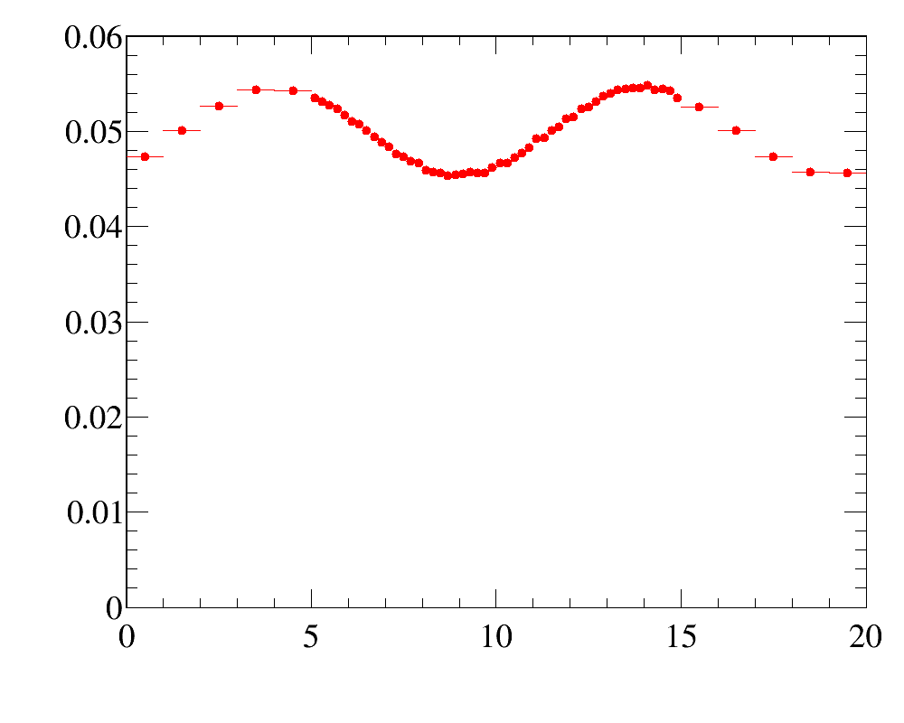
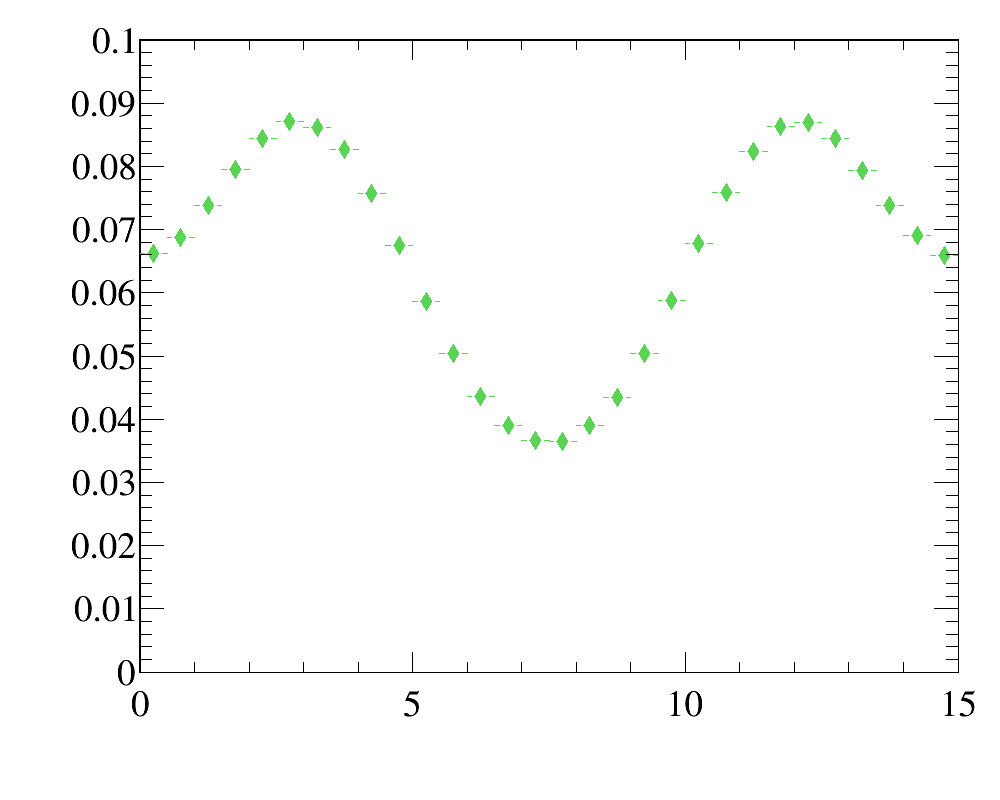
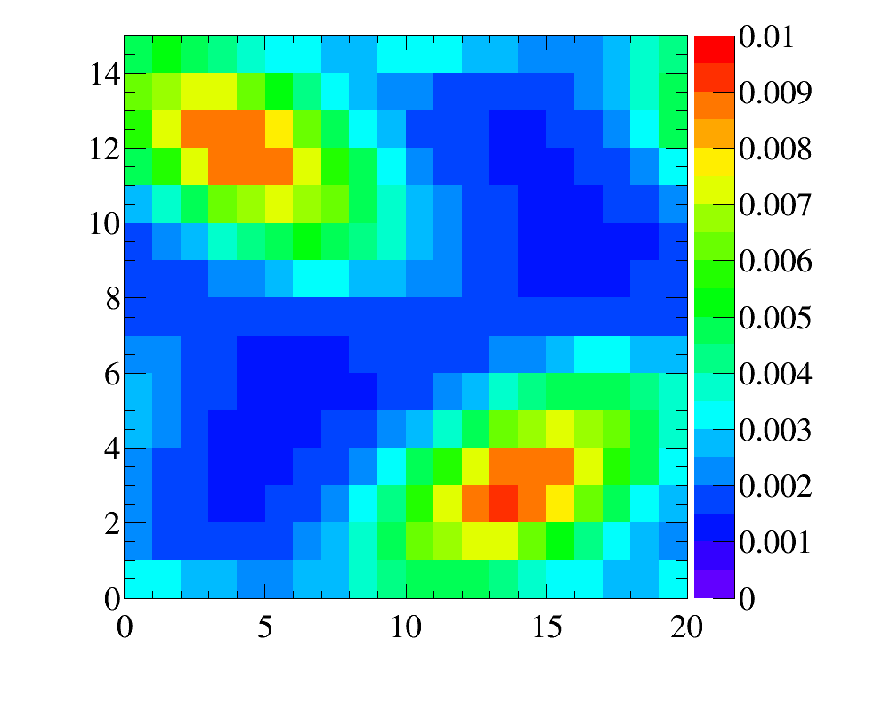
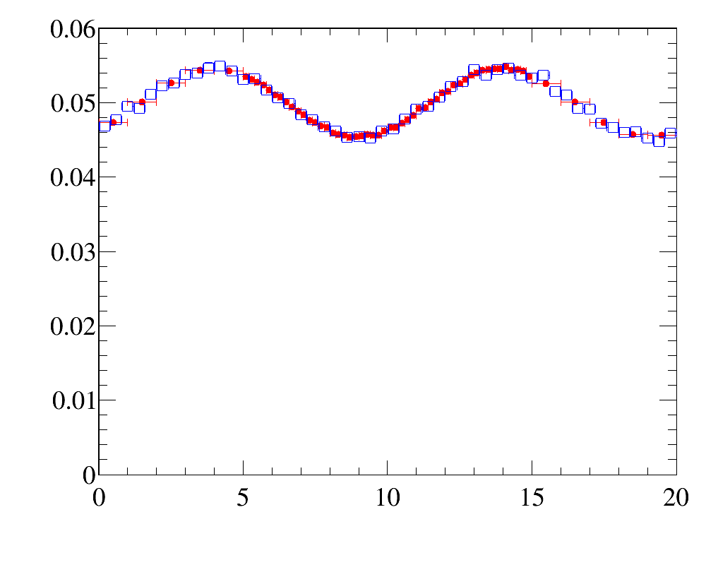
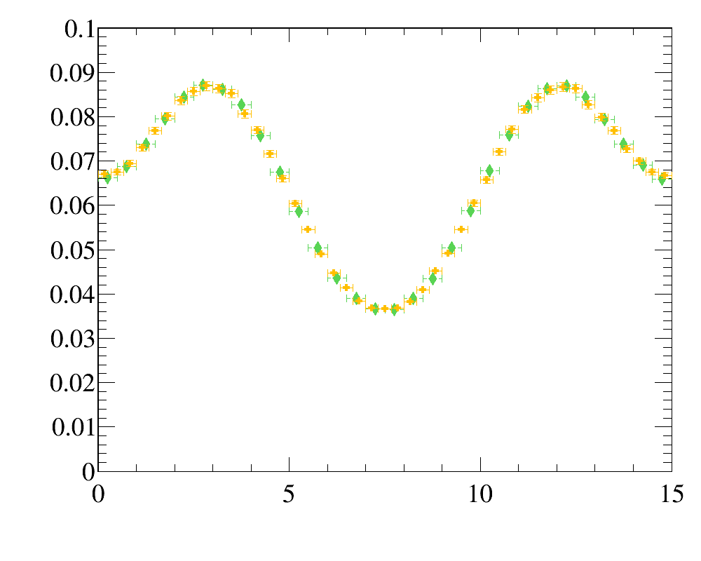
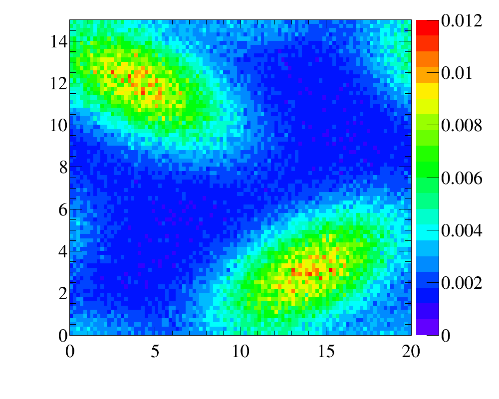

Reweighting
Ostap offers set of utlities to reweight the distributions. Typical use-case is
- one has set of data distributions
- and simulation does not describe these distributions well, and one needs to reweight simulation to describe all distributions
It is relatively easy procedure in Ostap, however it requires some code writing.
Data and simulated distributions
First, one needs to specify data distributions. It can be done in form of 1D,2D and 3D histograms, or as 1,2, or 3-argument functions or even all these techniques could be used together. It is important that these data distributions should be strickly positive for the corresponding range of variables. E.g. in case of histograms, there should be no empty or negative bin content.
hdata_x = ROOT.TH1D ( ... ) ## e.g. use the histogram
hdata_x = lambda x : math.exp (-x/10 ) ) ## or use a function
...
hdata_y = ...
Second, for each data distribution one needs to prebook the corresponding template histogram that will be filled from simulated sample. This template histogram should have the same dimensionality (1,2,3) and the corresponidg data distribtion. If data distribution is specified in a form of historgam, the edges of prebooked template histogram should correspond to the edges of data distribution, but there is no requirements for binning. Binning could be arbtrary, provided that there are no empty bins.
hmc_x = ROOT.TH1D ( ... )
hmc_y = ....
Iterations
Third, one needs to create empty database where the iterative weights are stored:
import Ostap.ZipShelve as DBASE
dbname = 'weights.db'
with DBASE.open( dbname ,'c') as db :
pass
Since Reweighting is essentially iterative procedure, we need to define some maximal number of iterations
iter_max = 10
for iter in range(iter_max) :
...
Weighter object
And for each iteration we need to create weighting object, that reads the current weights from database weight.db
from Ostap.Reweighting import Weight
weightings = [
## accessor function address indatabase
Weight.Var ( lambda s : s.x , 'x-reweight' ) ,
...
]
weighter = Weight ( dbname , weightings )
What is it?Click to expand
Weighted simulated sample
As the next step one needs to prepare simulated dataset, RooDataSet, that
- contains all varables for reweighting
- the current values of weights, provided by
weighter-object above
There are many ways to achive this. E.g. one can use SelectorWithVars-utility to decode data from input TTree/TChain into RooDataSet:
from Ostap.Selectors import SelectorWithVars, Variable
## variables to be used in MC-dataset
variables = [
Variable ( 'x' , 'x-var' , 0 , 20 , lambda s : s.x ) ,
...
Variable ( 'weight' , 'weight' , accessor = weighter )
]
## create new "weighted" mcdataset
selector = SelectorWithVars (
variables ,
'0<x && x<20 && 0<y && y<20'
)
## process
mc_tree.process ( selector )
mcds = selector.data ## newly created simulated dataset
print mcds
Calculate the updated weights and store them in database
At the next step we calculate the updated weights and store them in database
from Ostap.Reweighting import makeWeights, WeightingPlot
plots = [
## what how where data simulated-template
WeightingPlot ( 'x' , 'weight' , 'x-reweight' , hdata_x , hmc_x ) ,
...
]
## calculate updated weights and store them in database
more = makeWeights ( mcds , plots , dbname , delta = 0.01 ) ## <-- HERE
The object WeightingPlot defines the rule to fill simulated histogram from simulated dataset and associated the filled simulated histogram with data distribution. The actual correction to the weights is calculated according to the rule w = dd / mcd, where dd is a density for the data distribution and mcd is a density for simulated distribution. The weights w are calculated for each entry in array plots, they are properly normalized and stored in database dbname to be used for the next iteration. The function makeWeights also print the statistic of normalized weights:
# Ostap.Reweighting INFO Reweighting: ``x-reweight'': mean/(min,max): (1.00+-0.00)/(0.985,1.012) RMS:(0.74+-0.00)[%]
The last entries in this row summarize the statistics of corrections to the current weight. In this example, the mean correction is 1.00, the minimal correction is 0.985, the maximal correction is 1.012 and rms for corrections is 0.74\%. In tihs example one sees that for this paricualr iteration th ecorrections are rather small, and probably one can stop iterations. Two parameters delta and minmax of makeWeights function allows to automatized th emakinnng the decison. If calculated rms for all corrections is less than specified delta parameter and for each correction minnmax-difference deos not exceeed the specified minmax-parameter (the default value is 0.05), function return False (meaning no more iterations are needed), otherwise it returns True. And using this hint one can stop iterations or go further:
if not more and iter > 2 :
print 'No more iteratinos are needed!'
break
Compare data and simulated distributions for each iteration (optional)
In practice it is useful (and adviseable) to compare the data and simulated distributions at each iteration to hjave better control over the iteration process. One can make this comparion using zillions of the ways, but for the most imnportant case in practice, where data distribution is specified in a form of histogram, there are some predefined utilities
## prepare simulated distribution with current weights:
mcds.project ( hmc_x , 'x' , 'weight' )
## compare the basic properties: mean, rms, skewness and kurtosis
hdata_x.cmp_prnt ( hmc_x , 'DATA' , 'MC' , 'DATA(x) vs MC(x)' )
## calculate the ``distance``:
dist = hdata_x.cmp_dist ( hmc_x , density = True )
print "DATA(x)-MC(x) ``distance'' %s" % dist
## calculate the 'orthogonality'
cost = hdata_x.cmp_cos ( hmc_x , density = True )
print "DATA(x)-MC(x) ``orthogonality'' %s" % cost
## find the points of the maximal difference
mn,mx = hdata_x.cmp_minmax ( hmc_x , diff = lambda a,b : a/b , density = True )
print "DATA*(x)/MC(x) ``min/max-distance''[%%] (%s)/(%s) at x=%.1f/%.1f" % (
(100*mn[1]-100) , (100*mx[1]-100) , mn[0] , mx[0] )
Using the result
from Ostap.Reweighting import Weight
weightings = [
## accessor function address indatabase
Weight.Var ( lambda s : s.x , 'x-reweight' ) ,
...
]
weighter = Weight ( dbname , weightings )
mc_tree = ...
for i in range(100):
mc_tree.GetEntry(i)
print ' weight for event %d is %s' % ( i , weighted ( mc_tree ) )
Note that due to explicit specification of accessor function, reweighter can be customised to work with any type of input events/records. e/g/ assuem that event is a plain array,
and x-variable corresponds to index 0:
from Ostap.Reweighting import Weight
weightings = [
## accessor function address indatabase
Weight.Var ( lambda s : s[0] , 'x-reweight' ) ,
...
]
weighter = Weight ( dbname , weightings )
mc_tree = ...
for event in events :
print ' weight for event %s is %s' % ( event , weighted ( event ) )
Abstract reweightingClick to expand
 while the comparison of the initial data distribution (red line) and the reweighted simulated sample (greed filled diamonods) are shown here.
while the comparison of the initial data distribution (red line) and the reweighted simulated sample (greed filled diamonods) are shown here. 
Why one needs iterations?Click to expand
Examples
Simple 1D-reweighting
The example of simple 1D-reweighting can be inspected here, while the reweigthing result for the last iteration (blue open squares) are compared with data distribution (red filled circled) here:
The example also illustrates how to use various histogram comparison functions to have better control over the iterative process
More complicated case of non-factorizeable 2D-reweighting
The example of advanced 2D-reweighting can be inspected here.
In this example we have three data distributions fro two variables
1 one-dimensional x-distribution with fine binninig
1 one-dimensional y-distribution with fine binninig
1 two-dimensional y:x-distribution with coarse binning
  
It reflects relatively frequent case of kinematic reweighting using the transverse momentum and rapidity. Typically one has enough events to make fine-binned one-dimensional reference distributions, but two-dimensional distributions can be obtained only with relatively coarse binning scheme.
Simulated sample is a simlpe 2D-uniform distribution. Note that the data distributions are non-factorizeable, and simple 1D-reweightings here is not enought. In this example, for the first five iteration only 2D-reweighting y:x is applied, and then two 1D-reweighting x and y are added.
After the reweighting the simulated distributins are
- for
x-variable: data distribution (red filled circled) vs simulated sample (blue open squares)  - for
y-variable: data distribution (green filled diamonds) vs simulated sample (orange filled swiss-crosses)  - for
y:x-variables 